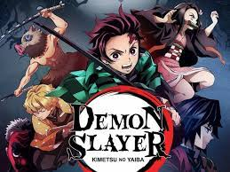

Ambientada en la era Taisho, la historia se centra en un joven llamado Tanjiro Kamado; un joven inteligente y de buen corazón que vive con su familia en las montañas, el cual se ha convertido en la única fuente de ingresos de su familia tras el fallecimiento de su padre, haciendo viajes al pueblo cercano para vender carbón. Sin embargo, toda su vida cotidiana cambia radicalmente cuando en uno de estos viajes, regresa a casa y descubre que toda su familia había sido asesinada por un poderoso demonio llamado Muzan Kibutsuji, siendo únicamente su hermana menor llamada Nezuko Kamado la única sobreviviente de aquel incidente, pero mientras trata de llevar a Nezuko al pueblo cercano para pedir ayuda, inesperadamente su hermana se despierta en pleno trayecto y se transforma en una demonio y trata de atacar a Tanjiro, pero a pesar de su condición Nezuko aun guarda signos de emociones y pensamiento humanos y trata en todo lo posible por no matar a su hermano. Sin embargo, su encuentro es rápidamente interrumpido por un joven llamado Giyū Tomioka, un poderoso espadachín integrante de la elite de los Hashira, cronológicamente siendo el actual Hashira del agua, el cual pertenece a una organización secreta de asesinos de demonios conocidos como 'Demon Slayers', el cual en un principio intenta matar a Nezuko por su condición de demonio, pero después de ver la determinación de Tanjirō por protegerla y de que su hermana Nezuko aun siendo una demonio intente protegerlo también, Tomioka decide perdonarle la vida por esta vez a Nezuko, aunque también le coloca un bozal de bambú en la boca de esta última por el tema de los colmillos como precaución.

Personaje 1:
Tanjirō Kamado: Es el protagonista principal de la serie, un joven gentil con mucha determinación y que no se rinde una vez que tiene una meta que alcanzar. También tiene un sentido del olfato muy desarrollado, con el cual encontró a Muzan y lo amenazó por convertir a Nezuko en demonio y aniquilar a su familia.
Personaje 2:
Nezuko Kamado: Es la hermana menor de Tanjirō y la única superviviente de su familia junto a Tanjirō tras el ataque de Muzan Kibutzuji, aunque se convirtió en una demonio. Sin embargo, retiene sus recuerdos y sentimientos hacia su hermano. Habiéndose vuelto alguien bastante sensible a la luz solar, su hermano.
Personaje 3:
Inosuke Hashibira: Es un asesino de demonios y compañero de viaje de Tanjirō, Nezuko y Zenitsu, que lleva una máscara de un jabalí. Vivió la mayor parte de su vida en el bosque donde luchó con animales y demonios. Su personalidad es parecida a la de un animal, actúa por impulso y es demasiado orgulloso
Personaje 4:
Zenitsu Agatsuma: Es un asesino de demonios y compañero de viaje de Tanjirō, Nezuko e Inosuke. Zenitsu tiene una personalidad cobarde debido a su baja autoestima, pero aun así desea estar a la altura de las expectativas de los demás, a pesar de estar constantemente asustado, llorando y huyendo. Su sentido del oído